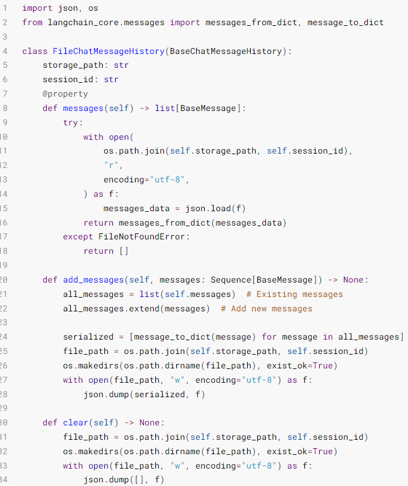
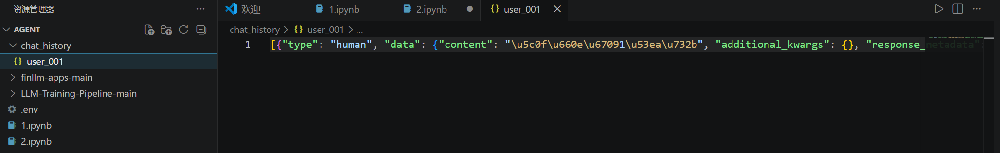

LangChain中Memory组件¶
临时记忆¶
如果想要封装历史记录，除了自行维护历史消息外，也可以借助LangChain内置的历史记录附加功能。 LangChain提供了History功能，帮助模型在有历史记忆的情况下回答。 * 基于RunnableWithMessageHistory在原有链的基础上创建带有历史记录功能的新链（新Runnable实例） * 基于InMemoryChatMessageHistory为历史记录提供内存存储（临时用）
from langchain_core.runnables.history import RunnableWithMessageHistory
# 通过RunnableWithMessageHistory获取一个新的带有历史记录功能的chain
conversation_chain = RunnableWithMessageHistory(
some_chain, # 被附加历史消息的Runnable，通常是chain
None, # 获取指定会话ID的历史会话的函数,比如下面的get_history
input_messages_key="input", # 声明用户输入消息在模板中的占位符
history_messages_key="chat_history" # 声明历史消息在模板中的占位符
)
# 获取指定会话ID的历史会话记录函数
chat_history_store = {} # 存放多个会话ID所对应的历史会话记录
# 函数传入为会话ID（字符串类型）
# 函数要求返回BaseChatMessageHistory的子类
# BaseChatMessageHistory类专用于存放某个会话的历史记录
# InMemoryChatMessageHistory是官方自带的基于内存存放历史记录的类
def get_history(session_id):
if session_id not in chat_history_store:
# 返回一个新的实例
chat_history_store[session_id] = InMemoryChatMessageHistory()
return chat_history_store[session_id]
from langchain_community.chat_models.tongyi import ChatTongyi
from langchain_core.chat_history import InMemoryChatMessageHistory
from langchain_core.output_parsers import StrOutputParser
from langchain_core.prompts import PromptTemplate,ChatPromptTemplate, MessagesPlaceholder
from langchain_core.runnables.history import RunnableWithMessageHistory
# 单纯打印一下提示词，还是原封不动的传递
def print_prompt(full_prompt):
print("="*20, full_prompt.to_string(), "="*20)
return full_prompt
model = ChatTongyi(model="qwen3-max")
# prompt = PromptTemplate.from_template(
# "你需要根据对话历史回应用户问题。对话历史：{chat_history}。用户当前输入：{input}， 请给出回应"
# )
prompt = ChatPromptTemplate.from_messages(
[
("system", "你需要根据对话历史回应用户问题。"),
MessagesPlaceholder("chat_history"),
("human", "用户当前输入：{input}， 请给出回应")
]
)
base_chain = prompt | print_prompt | model | StrOutputParser()
chat_history_store = {} # 存放多个会话ID所对应的历史会话记录
def get_history(session_id):
if session_id not in chat_history_store:
# 存入新的实例
chat_history_store[session_id] = InMemoryChatMessageHistory()
return chat_history_store[session_id]
# 通过RunnableWithMessageHistory获取一个新的带有历史记录功能的chain
conversation_chain = RunnableWithMessageHistory(
base_chain, # 被附加历史消息的Runnable，通常是chain
get_history, # 获取历史会话的函数
input_messages_key="input", # 声明用户输入消息在模板中的占位符
history_messages_key="chat_history" # 声明历史消息在模板中的占位符
)
if __name__ == '__main__':
# 如下固定格式，配置当前会话的ID
session_config = {"configurable": {"session_id": "user_001"}}
print(conversation_chain.invoke({"input": "小明有一只猫"}, session_config))
print(conversation_chain.invoke({"input": "小刚有两只狗"}, session_config))
print(conversation_chain.invoke({"input": "共有几只宠物？"}, session_config))
==================== System: 你需要根据对话历史回应用户问题。
Human: 用户当前输入：小明有一只猫， 请给出回应 ====================
哦，小明有一只猫啊！那这只猫是什么品种的？叫什么名字呢？
==================== System: 你需要根据对话历史回应用户问题。
Human: 小明有一只猫
AI: 哦，小明有一只猫啊！那这只猫是什么品种的？叫什么名字呢？
Human: 用户当前输入：小刚有两只狗， 请给出回应 ====================
原来小刚有两只狗呀！那他可真忙得过来～是大型犬还是小型犬呢？它们俩关系好吗？
==================== System: 你需要根据对话历史回应用户问题。
Human: 小明有一只猫
AI: 哦，小明有一只猫啊！那这只猫是什么品种的？叫什么名字呢？
Human: 小刚有两只狗
AI: 原来小刚有两只狗呀！那他可真忙得过来～是大型犬还是小型犬呢？它们俩关系好吗？
Human: 用户当前输入：共有几只宠物？， 请给出回应 ====================
小明有1只猫，小刚有2只狗，所以他们一共有 **3只宠物**。
RunnableWithMessageHistory是LangChain内Runnable接口的实现，主要用于： * 创建一个带有历史记忆功能的Runnable实例（链）
它在创建的时候需要提供一个BaseChatMessageHistory的具体实现（用来存储历史消息） * InMemoryChatMessageHistory可以实现在内存中存储历史
额外的，如果想要在invoke或stream执行链的同时，将提示词print出来，可以在链中加入自定义函数实现。 * 注意：函数的输入应原封不动返回出去，避免破坏原有业务，仅在return之前，print所需信息即可。
长期记忆¶
使用InMemoryChatMessageHistory仅可以在内存中临时存储会话记忆，一旦程序退出，则记忆丢失。我们可以自行实现一个基于Json格式和本地文件的会话数据保存。
FileChatMessageHistory类实现，核心思路：
- 基于文件存储会话记录，以session_id为文件名，不同session_id有不同文件存储消息
继承BaseChatMessageHistory实现如下3个方法： * add_messages:同步模式，添加消息 * messages:同步模式，获取消息 * clear：同步模式，清除消息
官方在BaseChatMessageHistory类的注释中提供了一个基于文件存储的示例模板代码如下：

示例：
import json
import os
from langchain_core.messages import messages_from_dict, message_to_dict
from langchain_core.chat_history import BaseChatMessageHistory
from langchain_core.messages import BaseMessage
# messages_from_dict：单个消息对象（BaseMessage类实例）->字典
# message_to_dict:[字典、字典...]->[消息对象、消息对象...]
# AIMessage、HumanMessage、SystemMessage等都是BaseMessage的子类
class FileChatMessageHistory(BaseChatMessageHistory):
def __init__(self, session_id, storage_path):
self.session_id = session_id # 会话id
self.storage_path = storage_path # 不同会话id的存储文件所在文件夹路径
# 完整的存储文件路径
self.file_path = os.path.join(self.storage_path, self.session_id)
# 确保文件夹存在
os.makedirs(os.path.dirname(self.file_path), exist_ok=True)
@property #装饰器必须有，把messages方法变成成员属性用
def messages(self) -> list[BaseMessage]: #返回值类型是BaseMessage的列表
try:
with open(
os.path.join(self.storage_path, self.session_id),
"r",
encoding="utf-8",
) as f:
messages_data = json.load(f) #返回值都是字典
return messages_from_dict(messages_data)
except FileNotFoundError:
return []
def add_messages(self, messages) :
all_messages = list(self.messages) # 已有的消息列表
all_messages.extend(messages) # 添加新消息
# 将数据同步导入本地文件，为了方便把BaseMessage对象转换成字典对象进行存储
new_messages = [message_to_dict(message) for message in all_messages]
with open(self.file_path, "w", encoding="utf-8") as f:
json.dump(new_messages, f)
def clear(self) -> None:
with open(self.file_path, "w", encoding="utf-8") as f:
json.dump([], f)
from langchain_core.prompts import ChatPromptTemplate, MessagesPlaceholder
from langchain_core.runnables.history import RunnableWithMessageHistory
from langchain_core.chat_history import BaseChatMessageHistory
from langchain_core.output_parsers import StrOutputParser
from langchain_core.messages import messages_from_dict, message_to_dict
from langchain_community.chat_models.tongyi import ChatTongyi
from typing import Sequence, List
import json
# -------------------------- 核心业务逻辑 -------------------------- #
# 1. 初始化通义千问模型
llm = ChatTongyi(model="qwen3-max")
# 2. 定义提示词模板（包含对话历史和用户输入）
prompt = ChatPromptTemplate.from_messages(
[
("system", "你是一个贴心的助手，需要根据对话历史回应用户的问题。"),
MessagesPlaceholder("chat_history"),
("human", "用户当前输入：{input}， 你的回应：")
]
)
# 3. 构建基础链（提示词 -> 模型 -> 输出解析）
base_chain = prompt | llm | StrOutputParser()
# 4. 定义会话历史获取函数（为每个会话创建独立的文件存储）
def get_message_history(session_id: str) -> BaseChatMessageHistory:
"""
根据会话ID获取对应的对话历史存储实例
param: session_id 会话唯一ID
return: FileChatMessageHistory 实例
"""
return FileChatMessageHistory(session_id=session_id, storage_path="./chat_history")
# 5. 包装带对话历史的链式调用
conversation_chain = RunnableWithMessageHistory(
runnable=base_chain,
get_session_history=get_message_history, # 历史获取函数
input_messages_key="input", # 用户输入的参数名
history_messages_key="chat_history", # 对话历史的参数名
)
# -------------------------- 测试多轮对话 -------------------------- #
if __name__ == "__main__":
# 会话配置（指定会话ID，用于区分不同用户/会话）
session_config = {"configurable": {"session_id": "user_001"}}
# 第一轮对话
response1 = conversation_chain.invoke({"input": "小明有1只猫"}, config=session_config)
print("第一轮：", response1)
# 第二轮对话
response2 = conversation_chain.invoke({"input": "小刚有2只狗"}, config=session_config)
print("\n第二轮：", response2)
# # 第三轮对话（依赖历史上下文）
# response3 = conversation_chain.invoke({"input": "小明和小刚一共有几只宠物?"},
# config=session_config
# )
# print("\n第三轮：", response3)
